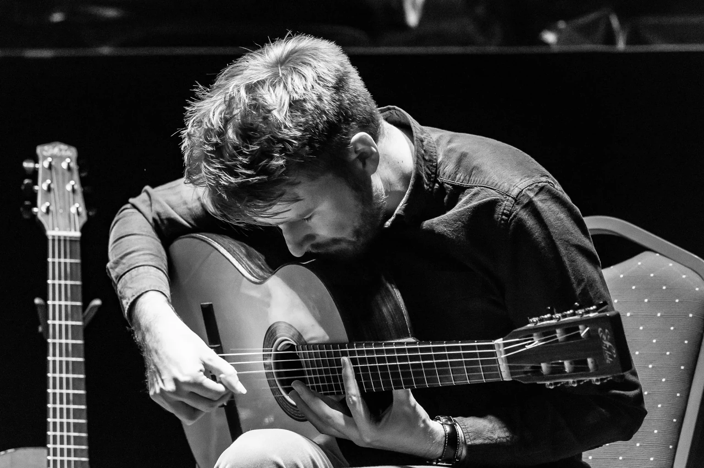
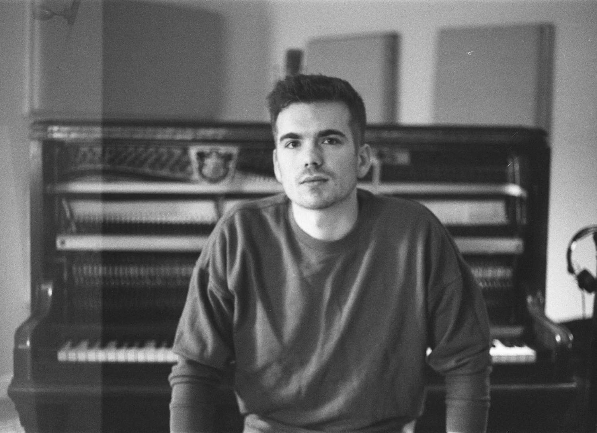

Will McNicol
Acoustic Guitar
British acoustic guitarist and composer, named UK Acoustic Guitarist of the Year by Guitarist Magazine in 2011, and later recognised by Acoustic Guitar Magazine among its “30 Great Guitarists Under 30.”
A song for anyone carrying something heavy. Through music, we hope to bring comfort, connection and hope — and support children affected by war or conflict.
Listen to the song→Project YOU grew from “You,” a song shaped by friendship across distance and a shared belief in what music can carry. The original song carries a message for people moving through everyday hardship as well as uncertain circumstances such as war and conflict.
Play the song. Let the music be with you.
Take from the music whatever speaks to you.
If it means something to you, share it with someone.
A song of hope for anyone who has ever felt lost, weary or unsure. A reminder that you have made it this far — and that kindness, in any form, still matters.
Listen on your platform →
British acoustic guitarist and composer, named UK Acoustic Guitarist of the Year by Guitarist Magazine in 2011, and later recognised by Acoustic Guitar Magazine among its “30 Great Guitarists Under 30.”

British multi-instrumentalist, composer and session musician whose work bridges classical sensitivity and contemporary sound, with film-scoring credits including Day in June and Take Me Home.
Indonesian professional drummer, session musician and educator working across recording, live performance and orchestral projects.
Additional musicians will be introduced as the recording comes together.
Young voices at the heart of Project YOU, bringing warmth and hope to the emotional centre of the new arrangement.
If the song generates proceeds, this is how they will be passed on.
The music is played and shared.
Eligible project proceeds are gathered.
Funds are directed to the selected organisation.
The project gives back to children affected by war or conflict.
Net streaming and music-related proceeds from the Project YOU release are intended to be donated to organisations supporting children affected by war or conflict.
Project YOU is a reminder that you have made it this far — and that kindness, in any form, still matters. We hope this song can be a small light for those who need it, and a step toward a more compassionate world for children everywhere.
All those miles have brought you here.